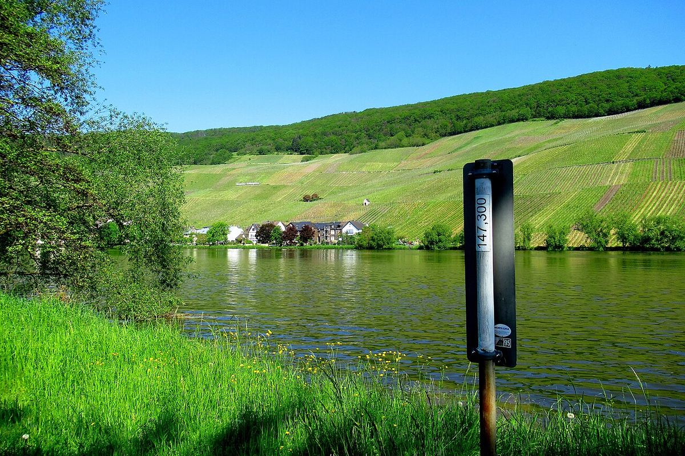

Germany
Germany is one of the great cool-climate wine countries, with vineyards concentrated in the valleys of the Rhine and its tributaries. It is the homeland of Riesling, which produces whites of high acidity there at every level of sweetness, and an increasingly respected producer of Spätburgunder (Pinot Noir).

History
It was the Romans who spread winegrowing along the banks of the Mosel and the Rhine. Trier, one of the great cities of the late Empire, was an important centre of consumption, and in the fourth century the poet Ausonius described in his poem Mosella the vine-covered slopes along the river. During the Middle Ages monasteries and ecclesiastical lords extended and tended the vineyards; the Cistercians of Kloster Eberbach, in the Rheingau, are a prominent example. Tradition credits Schloss Johannisberg, in 1775, with the chance discovery of the value of late harvesting, the origin of the Spätlese category.
In the nineteenth century the finest wines of the Rhine and Mosel were among the most expensive in the world. The twentieth century was harder: phylloxera, wars and, after 1945, a focus on cheap, high-volume sweet wines such as Liebfraumilch damaged the image of German wine abroad. Since the 1980s a new generation of producers has committed to lower yields, to dry wines and to the identity of each vineyard, and today Germany once again enjoys great prestige.
Climate and soils
Germany lies close to the northern limit of European viticulture. Most of its vineyards are in the south-west of the country, on south-facing slopes beside rivers that moderate temperatures and reflect light. The climate is cool, with long, slow ripening that preserves acidity and aromatic finesse. Soils are very varied: slate in the Mosel and parts of the Rheingau and Nahe, volcanic rock in the Kaiserstuhl (Baden), limestone and sandstone in the Pfalz, loess and marl in Rheinhessen, and shell limestone in Franken.
Grapes and styles
Riesling is the most widely planted and most emblematic variety: it produces wines ranging from dry and taut to sweet, nobly rotten styles, always with marked acidity. It is followed by Müller-Thurgau, which makes light wines, and Silvaner, traditional in Franken and Rheinhessen. Other important whites are Grauburgunder (Pinot Gris) and Weissburgunder (Pinot Blanc). Spätburgunder (Pinot Noir) is the main red grape, with Baden, the Pfalz and the Ahr as leading areas; Dornfelder and Lemberger (Blaufränkisch) complete the picture. Germany also produces large quantities of sparkling wine, known as Sekt.
Regulations and classifications
The wine law of 1971 organised the country into thirteen wine regions (Anbaugebiete) and classified wines according to the ripeness of the grapes at harvest. Prädikatsweine are divided, in order of increasing minimum ripeness, into Kabinett, Spätlese, Auslese, Beerenauslese and Trockenbeerenauslese, plus Eiswein, made from grapes frozen on the vine. These terms indicate ripeness and not necessarily sweetness: a Kabinett or a Spätlese may be dry (trocken), off-dry (halbtrocken or feinherb) or sweet. Below them are the Qualitätsweine from a specified region.
In parallel, the VDP producers’ association has developed a vineyard classification inspired by Burgundy, with four levels (Gutswein, Ortswein, Erste Lage and Grosse Lage). Dry wines from vineyards in the top category are sold as Grosses Gewächs. In recent years national legislation has also moved towards a system that gives more weight to origin.
Regions & appellations
Mosel
Anbaugebiet (specified wine region) · The Mosel region follows the winding course of this river and its tributaries the Saar and Ruwer, with slate vineyards on extremely steep slopes. It is the birthplace of some of the most delicate and long-lived Rieslings in the world.
Rheingau
Anbaugebiet (specified wine region) · The Rheingau occupies the right bank of the Rhine where the river flows from east to west, with south-facing slopes sheltered by the Taunus hills. It is one of the historic cradles of Riesling and of late harvesting.
Pfalz
Anbaugebiet (specified wine region) · The Pfalz (Palatinate) is one of Germany’s largest wine regions and one of its warmest and sunniest, a natural continuation of Alsace north of the French border. It produces outstanding dry Rieslings alongside a wide range of whites and reds.
Rheinhessen
Anbaugebiet (specified wine region) · Rheinhessen is Germany’s largest wine region, a landscape of gentle hills within the bend formed by the Rhine between Worms, Mainz and Bingen. After decades associated with high-volume wines, it is now one of the country’s most dynamic regions.
Nahe
Anbaugebiet (specified wine region) · The Nahe region follows this tributary of the Rhine, which joins it at Bingen, and stands out for an exceptional diversity of soils within a small area. Its Rieslings combine the finesse of the Mosel with a little more body and a marked mineral character.
Baden
Anbaugebiet (specified wine region) · Baden is Germany’s southernmost wine region, a long strip stretching from the Tauber valley to Lake Constance, largely facing Alsace. It is the German home of the Pinot varieties, with Spätburgunder as its main grape.
Franken
Anbaugebiet (specified wine region) · Franken (Franconia), in northern Bavaria, follows the course of the river Main around Würzburg. It is the region of Silvaner par excellence, with traditionally dry wines bottled in the distinctive flattened bottle known as the Bocksbeutel.
Ahr
Anbaugebiet (specified wine region) · A small valley south of Bonn, one of Germany’s northernmost wine regions and, paradoxically, one of its great red-wine areas. Its Spätburgunder grows on very steep slate slopes.
Württemberg
Anbaugebiet (specified wine region) · A region in south-west Germany, around Stuttgart and the Neckar valley, where red grapes predominate. It is the home of Trollinger and Lemberger, with a strong cooperative tradition and largely local consumption.
Mittelrhein
Anbaugebiet (specified wine region) · The Middle Rhine region, along the spectacular gorge between Bingen and the outskirts of Bonn. Its slate vineyards on dizzying slopes produce mainly crisp Riesling, in a landscape inscribed as a World Heritage Site.